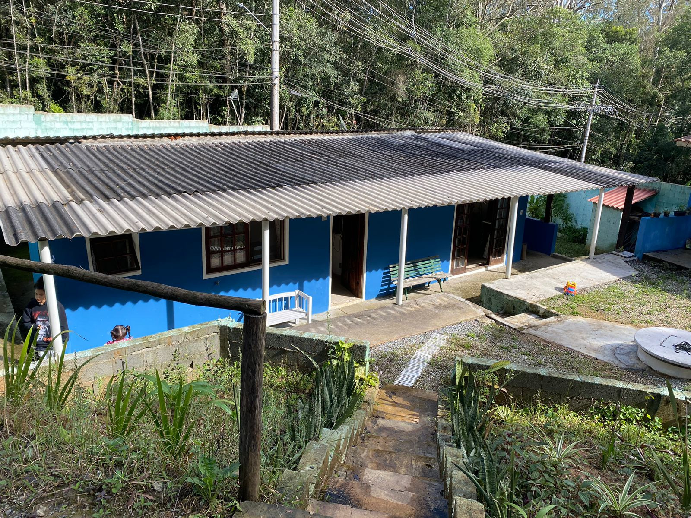

Chácara Embura, 1.000.00 Metros
(porteira fechada)

2 dormitórios 1 com suite, 2 banheiros, sala, cozinha, 7 vagas carro, área churrasco ccom fogão a lenha, poço semi artesiano de 80 metros de profundidade, Poço caipira de 15 metros, Sistema foto célula (acende luz TD casa automático a noite, ao chegar), Lago artificial de 5X2 , com 80 profundidade(desativado, dar para ativar fazer fonte ou criar peixes). 3 caixas de água(sendo 2 de mil litros p/ abaster casa com artesiano e uma 300 litros p/ abastecer parte limpeza área de churrasco caipira). Porteira fechada( menos os jogos fliperama e bilhar, restante vai tudo).
Para mais informaçãoes entre em contato via WhatsApp-(11)956304909